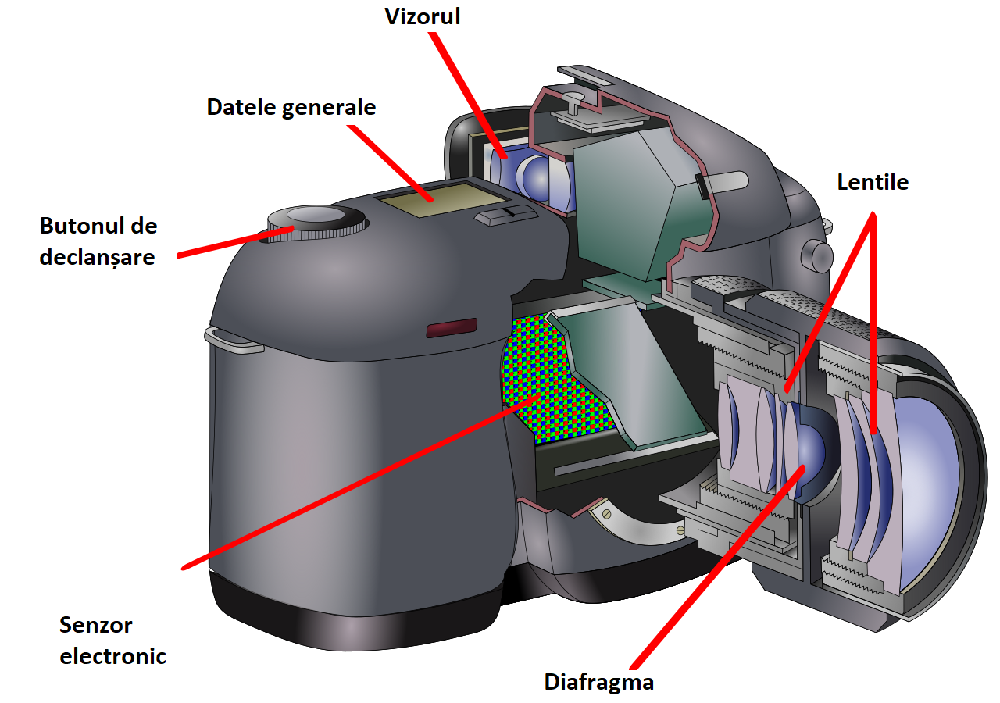
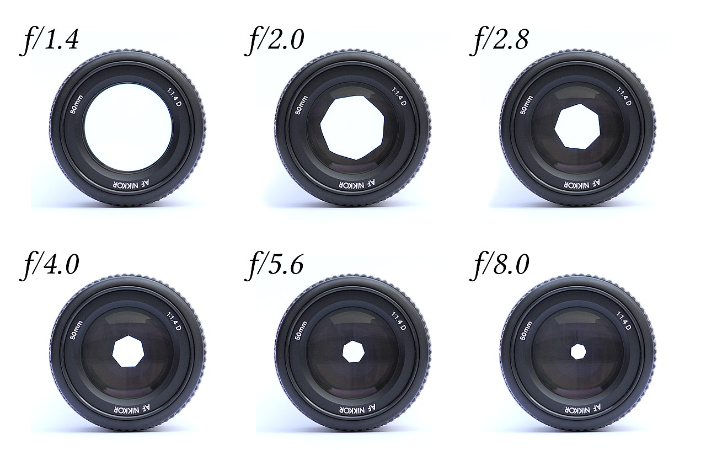
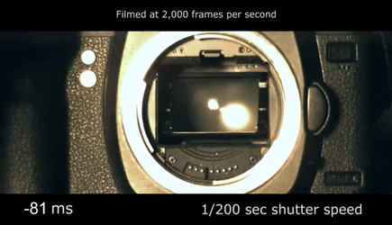
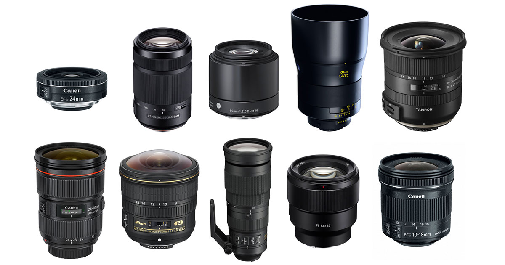
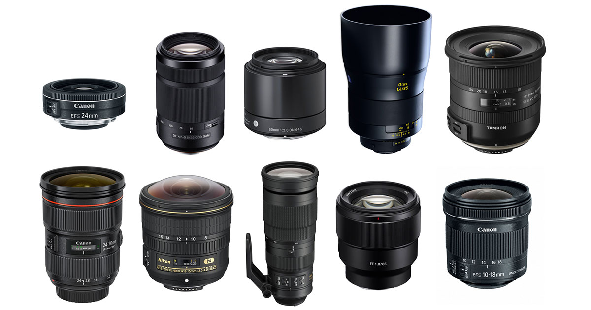
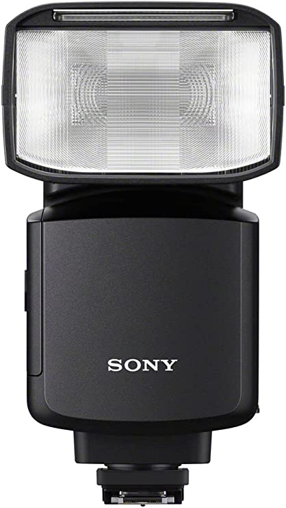
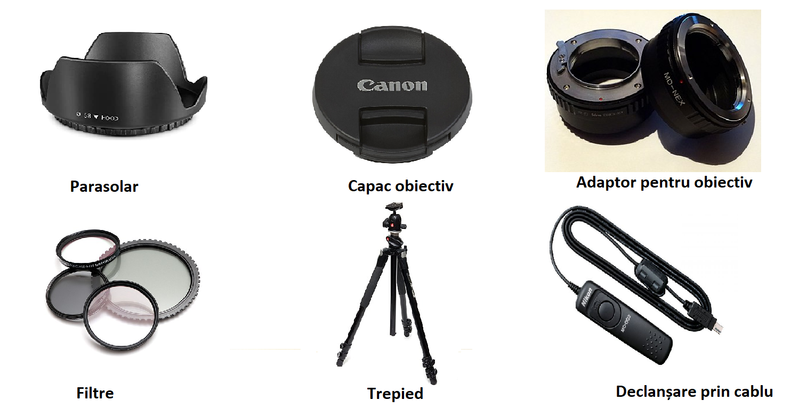
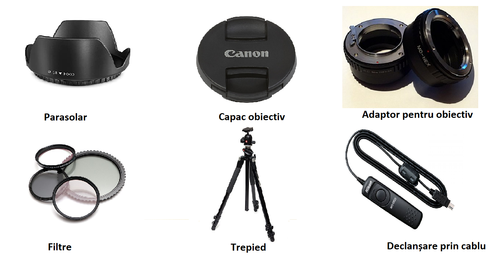

Aparatul fotografic (sau aparat de fotografiat) este un aparat optic
cu ajutorul căruia pot fi obținute imagini reale ale obiectelor. La
aparatele clasice, fixarea acestor imagini se făcea pe plăci sau filme
acoperite cu un strat de emulsie fotografică. În urma revoluției
digitale, majoritatea aparatelor de fotografiat transformă informația
vizuală în informație digitală, cu ajutorul unui senzor de imagine.

Părțile principale sunt:
- obiectivul fotografic (fix sau interschimbabil);
- obturatorul (controlează timpul în care filmul a fost expus la lumina. Este un mecanism complex care poate funcționa în modul automat sau manual, putand controla timpul în care acesta sta deschis).
- camera obscură (rigidă sau pliabilă)
Diafragma este un dispozitiv care controlează și cantitatea de lumină
care ajunge la film sau senzor în cazul aparatelor digitale.
Închiderea și deschiderea acesteia adaptează luminozitatea la
condițiile de expunere și extinde câmpul de claritate. Este ca și
irisul ocular, se deschide și se închide în funcție de cantitatea de
lumină procurată, doar că în fotografie noi avem control deplin.

Obturatorul , împreună cu diafragma, este una dintre cele două moduri
de a controla cantitatea de lumină care intră în cameră. El determină
durata în care suprafața sensibilă la lumină este expusă la lumină.
Obturatorul se deschide, lumina intră în cameră și expune filmul sau
senzorul la lumină, iar apoi obturatorul se închide

Exponometru, în majoritatea camerelor moderne, cantitatea de lumină care
intră în cameră este măsurată cu ajutorul unui luminometru sau al
expunetorului încorporat, datele furnizate de exponometru sunt folosite
pentru setările optime de expunere a matricei fotosensibile la
lumină.
Obiectivul unei camere captează lumina obiectului fotografiat și o
focalizează pe senzor.
Designul și fabricarea obiectivului sunt esențiale pentru calitatea fotografiei. O revoluție tehnologică în designul camerelor foto în timpul secolului al XIX-lea a modernizat fabricarea sticlei optice și designul lentilelor. Acest lucru a contribuit la procesele moderne de fabricație a unei game largi de instrumente optice, cum ar fi ochelari de citit și microscoape. Printre companiile de pionierat se numără Zeiss și Leitz. Obiectivele camerei sunt realizate într-o gamă largă de distanțe focale, cum ar fi unghi larg extrem, standard și teleobiectiv mediu.
Lentilele fie au o distanță focală fixă (obiectiv principal) fie o distanță focală variabilă (obiectiv zoom). Fiecare obiectiv este potrivit pentru anumite tipuri de fotografie. Unghiurile extrem de largi ar putea fi preferate pentru arhitectură datorită capacității lor de a capta o vedere largă a clădirilor. Lentilele standard au în mod obișnuit o deschidere mare și, din această cauză, sunt adesea folosite pentru fotografierea stradală și documentară. Teleobiectivul este util în sport și animale sălbatice, dar este mai susceptibil la mișcarea camerei, ceea ce ar putea cauza neclaritatea mișcării. 
Designul și fabricarea obiectivului sunt esențiale pentru calitatea fotografiei. O revoluție tehnologică în designul camerelor foto în timpul secolului al XIX-lea a modernizat fabricarea sticlei optice și designul lentilelor. Acest lucru a contribuit la procesele moderne de fabricație a unei game largi de instrumente optice, cum ar fi ochelari de citit și microscoape. Printre companiile de pionierat se numără Zeiss și Leitz. Obiectivele camerei sunt realizate într-o gamă largă de distanțe focale, cum ar fi unghi larg extrem, standard și teleobiectiv mediu.
Lentilele fie au o distanță focală fixă (obiectiv principal) fie o distanță focală variabilă (obiectiv zoom). Fiecare obiectiv este potrivit pentru anumite tipuri de fotografie. Unghiurile extrem de largi ar putea fi preferate pentru arhitectură datorită capacității lor de a capta o vedere largă a clădirilor. Lentilele standard au în mod obișnuit o deschidere mare și, din această cauză, sunt adesea folosite pentru fotografierea stradală și documentară. Teleobiectivul este util în sport și animale sălbatice, dar este mai susceptibil la mișcarea camerei, ceea ce ar putea cauza neclaritatea mișcării. 
Focalizarea - Datorită proprietăților optice ale unui obiectiv fotografic, numai obiectele aflate într-un interval limitat de distanță față de cameră vor fi reproduse clar. Procesul de ajustare a acestui interval este cunoscut sub numele de schimbarea focalizării camerei. Există diferite moduri de a focaliza cu precizie o cameră. Cele mai simple camere au focalizare fixă și folosesc o deschidere mică și un obiectiv cu unghi larg pentru a se asigura că totul într-un anumit interval de distanță de la obiectiv, de obicei în jur de 3 metri (10 ft.) până la infinit, este într-o focalizare rezonabilă. Camerele cu focalizare fixă sunt de obicei ieftine, cum ar fi camerele de unică folosință. Camera poate avea, de asemenea, o gamă limitată de focalizare sau o scară de focalizare care este indicată pe corpul camerei. Utilizatorul va ghici sau calcula distanța până la subiect și va regla focalizarea în consecință. Pe unele camere, acest lucru este indicat prin simboluri ISO, pentru a gestiona diferite condiții de iluminare, puteți modifica setările unui senzor de cameră digitală pentru a se potrivi condițiilor de iluminare. Aceste setări necesare se numesc ISO. De asemenea, puteți seta ISO pe smartphone-uri. Aici este posibil să trebuiască să vă jucați cu câteva setări manuale pentru a-l accesa. Indiferent dacă utilizați o cameră DSLR sau un smartphone, ISO este întotdeauna dat ca număr. Prin creșterea acestui număr, puteți lăsa mai multă lumină în senzorul camerei și, prin urmare, imaginile dvs. vor fi mai luminoase.
Accesoriile unei camere
Un bliț oferă o explozie scurtă de lumină puternică în timpul
expunerii și este o sursă de lumină artificială folosită în mod
obișnuit în fotografie. Cele mai multe sisteme blitz-uri moderne
folosesc o descărcare de înaltă tensiune alimentată de baterie
printr-un tub umplut cu gaz pentru a genera lumină strălucitoare
pentru o perioadă foarte scurtă de timp (1/1.000 de secundă sau mai
puțin)

Parasolar: folosit la capătul unui obiectiv pentru a bloca soarele sau
altă sursă de lumină pentru a preveni strălucirea și strălucirea
lentilelor (vezi și caseta mată).
Capac obiectiv: acoperă și protejează obiectivul camerei atunci când nu este utilizat.
Adaptor pentru obiectiv: permite utilizarea altor obiective decât cele pentru care a fost concepută camera.
Filtru: permite culori artificiale sau modifică densitatea luminii.
Tub de extensie a obiectivului: permite focalizarea atentă în fotografia macro.
Trepied: folosit în principal pentru a menține camera stabilă în timpul înregistrării video, pentru expunere lungă și fotografiere în interval de timp.
Adaptor pentru microscop: folosit pentru a conecta o cameră la un microscop pentru a fotografia ceea ce microscopul examinează.
Declanșare prin cablu: folosit pentru a controla de la distanță declanșatorul folosind un buton de declanșare de la distanță care poate fi conectat la cameră printr-un cablu. Poate fi folosit pentru a bloca obturatorul deschis pentru perioada dorită și este, de asemenea, folosit în mod obișnuit pentru a preveni tremuratul camerei de la apăsarea butonului de declanșare încorporat al camerei.
Filtru UV: poate proteja elementul frontal al unui obiectiv de zgârieturi, fisuri, pete, murdărie, praf și umiditate, păstrând în același timp un impact minim asupra calității imaginii. 
Capac obiectiv: acoperă și protejează obiectivul camerei atunci când nu este utilizat.
Adaptor pentru obiectiv: permite utilizarea altor obiective decât cele pentru care a fost concepută camera.
Filtru: permite culori artificiale sau modifică densitatea luminii.
Tub de extensie a obiectivului: permite focalizarea atentă în fotografia macro.
Trepied: folosit în principal pentru a menține camera stabilă în timpul înregistrării video, pentru expunere lungă și fotografiere în interval de timp.
Adaptor pentru microscop: folosit pentru a conecta o cameră la un microscop pentru a fotografia ceea ce microscopul examinează.
Declanșare prin cablu: folosit pentru a controla de la distanță declanșatorul folosind un buton de declanșare de la distanță care poate fi conectat la cameră printr-un cablu. Poate fi folosit pentru a bloca obturatorul deschis pentru perioada dorită și este, de asemenea, folosit în mod obișnuit pentru a preveni tremuratul camerei de la apăsarea butonului de declanșare încorporat al camerei.
Filtru UV: poate proteja elementul frontal al unui obiectiv de zgârieturi, fisuri, pete, murdărie, praf și umiditate, păstrând în același timp un impact minim asupra calității imaginii. 